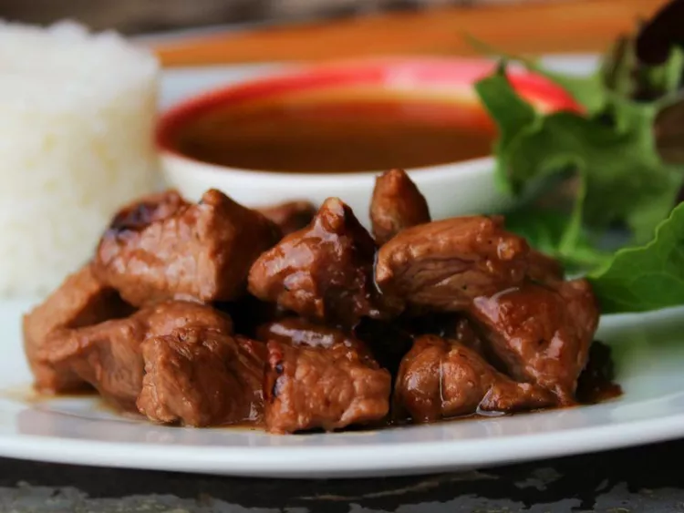

Bo luc Lac - Shaking Beef
Home Page

Description
This is a delicious Vietnamese recipe called Bo luc lac which translates into "shaking beef".
It is usually served with various kinds of vegetables mostly, onions, cucumbers and bell peppers with a side
red rice and fish sauce as the dipping sauce.
Ingredients
- 1 lb sirloin steak, cut into 1-inch cubes
- 2 tbs Oyster Sauce
- 1 tbs soy sauce
- 1 tbs rice vinegar
Steps
- Head into ChatGPT here
- Login or sign up for an account if you haven't already
- type in how to cook bo luc lac
- copy the recipe